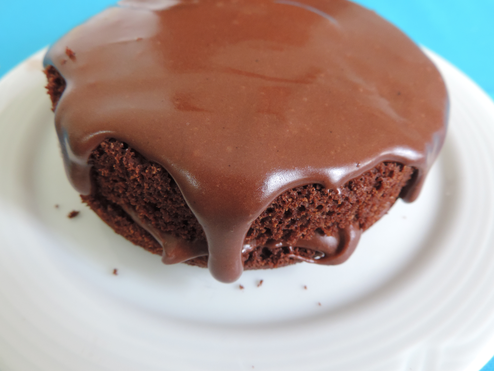

← Voltar
Bolo de Chocolate Fit

Ingredientes
- 1 xícara de farinha de aveia
- 1/2 xícara de farinha de amêndoas
- 1/2 xícara de cacau em pó 100%
- 1/2 xícara de açúcar de coco ou xilitol
- 3 ovos
- 1/2 xícara de leite desnatado ou vegetal (como leite de amêndoas)
- 1/4 de xícara de óleo de coco
- 1 colher de sopa de fermento em pó
Modo de Preparo
- Pré-aqueça o forno a 180°C.
- Em uma tigela, misture a farinha de aveia, a farinha de amêndoas, o cacau em pó e o açúcar de coco.
- Adicione os ovos, o leite e o óleo de coco. Misture até obter uma massa homogênea.
- Por último, adicione o fermento em pó e misture delicadamente.
- Despeje a massa em uma forma untada ou forrada com papel manteiga.
- Asse por cerca de 30 a 35 minutos ou até que um palito saia limpo.
- Deixe esfriar antes de servir.